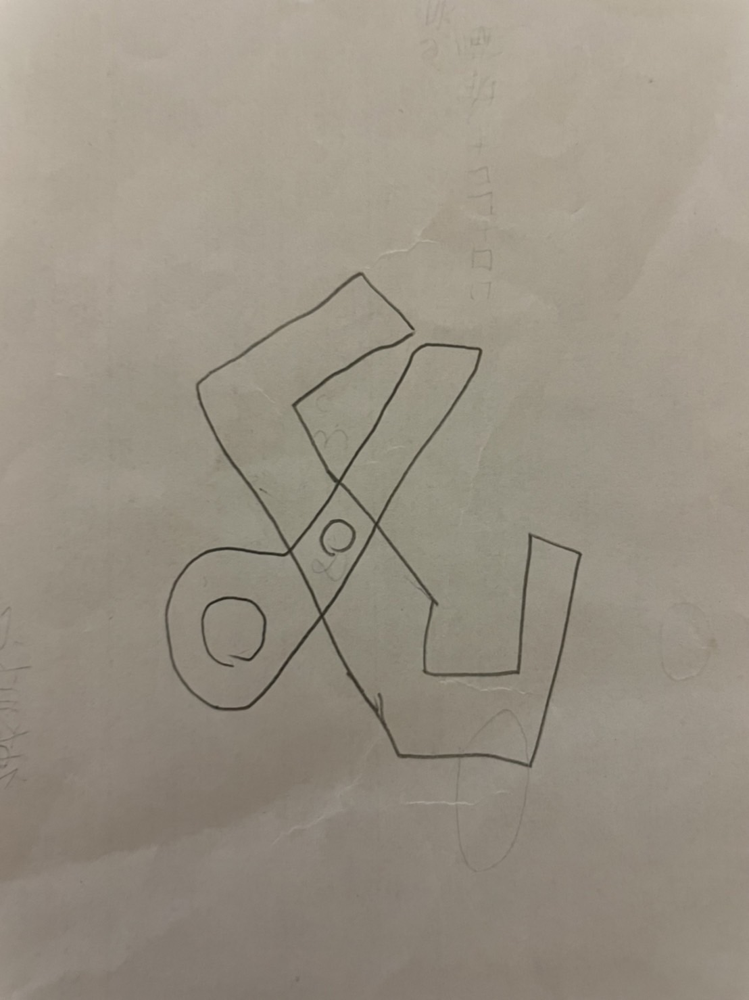
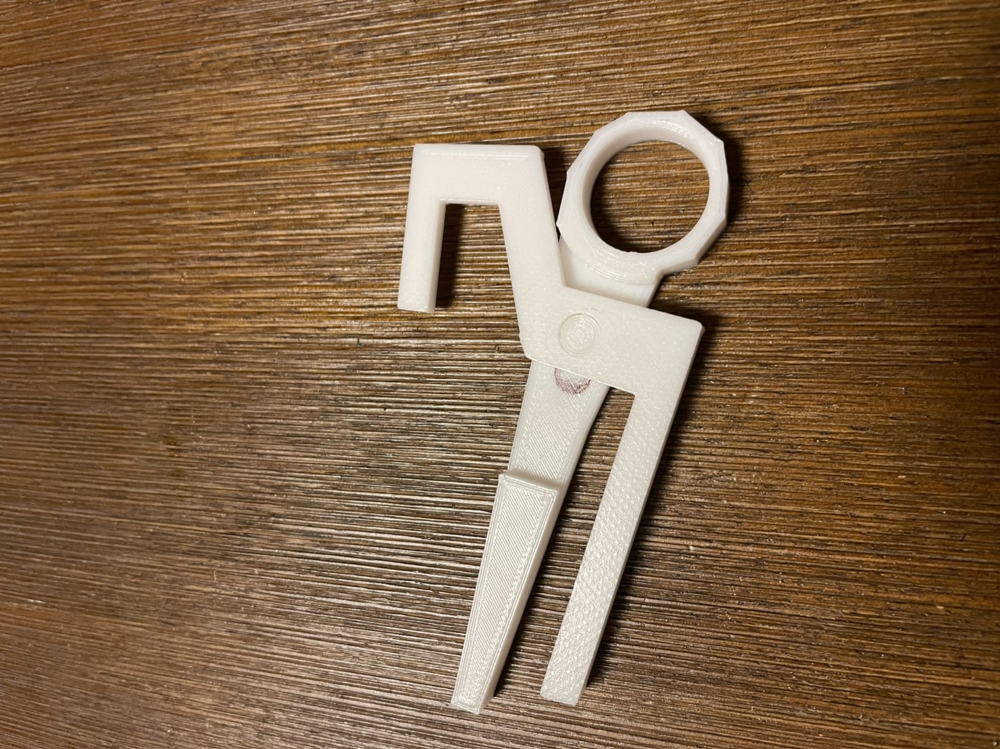
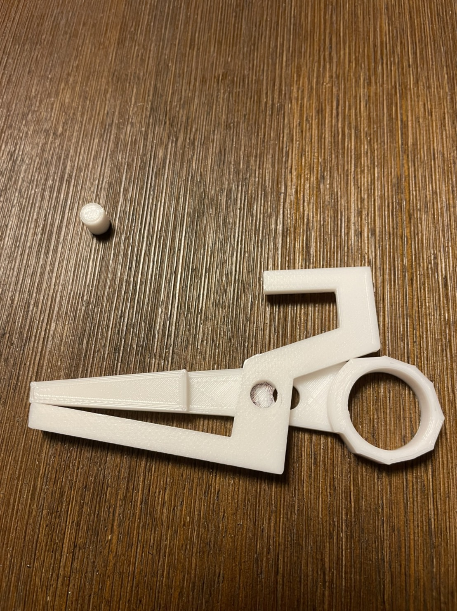
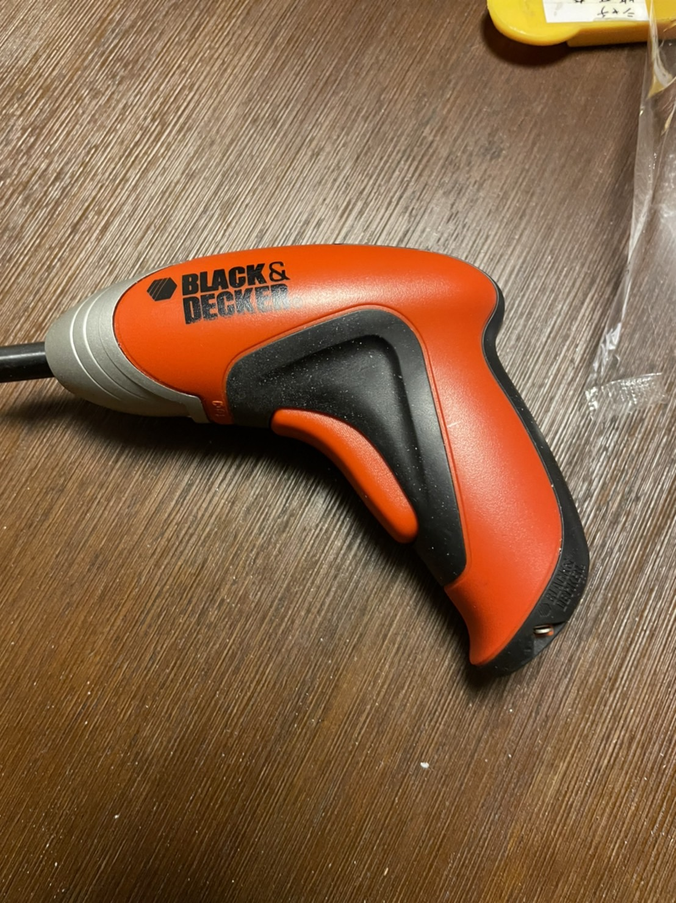
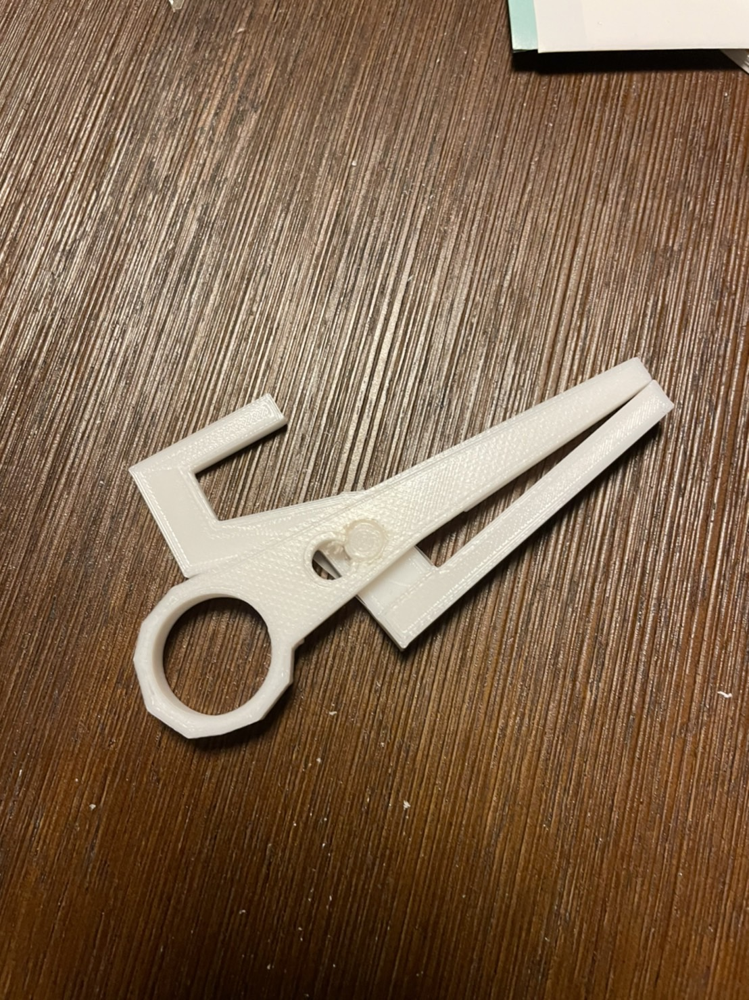

下書き
作品：ながらピンセット
親指を使わずにペンなどを握りながら使用することのできるピンセット
中指をピンセットのリング部分に通し、人差し指をトリガーの部分に掛け、３Dプリントのみでの状態（資料１）
使用した工具
加工後
今回授業を通じて初めて３Dプリンターを使用した。
フュージョンではうまく形を作成することができたと思ったが、実際に印刷をしてみると穴の位置がうまく合わずきれいに完成させることができなかった。「資料１」
工具を使用することで穴の位置を調整し、作品は何とか形にすることができた。
次回からはこの経験を活かし、フュージョンの修正の期間も見積もった計画を立てれるようにしたい。
備考：パーツを連結する際は、大きさを０．１～０．２ｍｍ小さく設定することでぴったりはめることができることが分かった